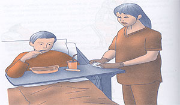
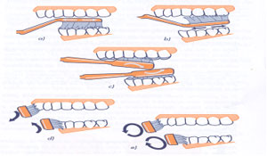

|
- Protocolo de actuación
- Preparar el equipo.
- Lavarse las manos.
- Explicar al usuario el procedimiento que se va a realizar, pidiendo
su colaboración.
- Si el usuario está encamado, y no está contraindicado,
se elevará la cabecera de la cama.
- Ponerse los guantes.
- Si el usuario está consciente pero no puede lavárselos
él solo: cepillaremos los dientes, desde las encías
hasta la corona, realizando un movimiento de barrido para eliminar
los residuos.
Debe limpiarse la cara externa, interna, superior e inferior
de los dientes y muelas de ambas mandíbulas, así
como la lengua.
Ésta es una de las técnicas de limpieza de la boca,
denominada vertical, pues el cepillo se coloca en un ángulo
de 45º con el diente, al que barre en sentido vertical, desde
la encía hasta la cara oclusa. En esta cara, el movimiento
de barrido es de atrás hacia delante, con las cerdas perpendiculares
a las piezas dentarias.
- Se facilitará un vaso con agua para el aclarado de la
boca, recogiéndolo en la palangana o batea. Después
se aclarará de nuevo con el antiséptico bucal.
- Si el usuario tiene una dentadura postiza: se retirará
con una gasa moviendo con suavidad la placa superior (para romper
<<el vacío>> que ésta tiene), depositándola
en la batea, para su cepillado y aclarado posterior. La boca se
limpia enjuagándola con antiséptico bucal o, si el
usuario no puede, con una torunda impregnada en antiséptico.
Después se le volverá a colocar en la cavidad bucal,
o se introducirá en un vaso con agua, suero, o preparados
comerciales, hasta su utilización.
- Si se trata de un usuario inconsciente: colocarle la cabeza ladeada.
Preparar una torunda con una gasa y unas pinzas, un kocher o un
depresor lingual. Mojarla con el antiséptico bucal sobre
la batea, escurriendo el exceso de líquido con otra pinza.
Limpiar toda la boca, repitiendo el proceso con varias torundas.
En un usuario intubado, la higiene se realiza así o empleando
una jeringa con solución antiséptica.
- Al terminar, se le secan los labios y se les aplica vaselina
para mantener su hidratación y evitar grietas o fisuras.
|
| |
|  |
|
 |
|
|